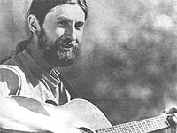

MARC BRISTOL:
Even homesteaders need to relax and enjoy themselves from time to time, right? And almost everybody these days wants to cut his or her cost of living. So how about a little do-it-yourself entertainment?
And that's what this column is all about. Down-home music that you can make ...and the instruments (which, in some cases, you can also make!) to play that music on.
The important thing is that this is your column. If you like it, write to me and- let me know. If you have some ideas for this feature, let me know that. I'm open to any suggestions or information you care to contribute. I'll even try to answer your questions about downhome music ...but-both for the benefit of all MOTHER's readers and to ease my correspondence load-I'll deal with those questions, whenever possible, here in this column ...rather than in personal letters.
Address your correspondence for this column and this column only-to Marc Bristol, 18520 312th Ave. N.E., Duvall, Wash. 98019.
Back in the 60's I became really excited by the theme music for the (otherwise somewhat moronic) television program The Beverly Hillbillies. The bright, new sound that caught my ear came from the banjo of bluegrasser Earl Scruggs. His picking style impressed many other people, too, and by the time Earl had done the theme music for the movie Bonnie and Clyde (in 196?), nearly everyone had heard of bluegrass and knew that it was uptempo, acoustic country music featuring a lot of sparkling banjo and fiddle work.
The roots of this invigorating style go all the way back to old-time string band music. However, it was Kentuckian Bill Monroe (born in 1911) who developed and defined the special sound of bluegrass, and gave the music its name.
Bill started his career by playing backup guitar-at local dances-with his uncle, fiddler Pen Vandever (later to be immortalized in some of Bill's best-known songs), who exerted a strong influence on the young man's style. Then, in the 30's, when Bill and his brother Charlie landed a radio job as a singing duo (with Charlie on guitar and Bill on mandolin), they evolved the vocal style that's the soul of bluegrass.
After the brothers drifted apart, Monroe put together a group he called the Bluegrass Boys, and began to fine-tune his distinctive sound. It wasn't until the late 40's, however, when he hired Lester Flatt and Earl Scruggs, that the banjo assumed its position of importance in the genre. Earl's driving, three-finger picking technique was new and exciting, and his banjo style soon became the instrumental trademark of bluegrass music.
Lester and Earl eventually got tired of being on the road with Bill and broke off to form their own act, the Foggy Mountain Boys, but by then the bluegrass sound had been defined. To this day, the banjo players in Bill's band pick in a style similar to the one Earl created.
Nowadays, Scruggs and his sons, as the Earl Scruggs Revue, are playing country rock. Many purists are outraged by this change, but it's perfectly all right with me! It was, after all, experimentation that gave birth to bluegrass in the first place, and a denial of the right to explore new frontiers is contrary to the whole spirit of American music.
PERFORMERS TO LOOK FOR
There have been many musicians, in the past 40 years, who've learned much from their association with Bill Monroe's Bluegrass Boys, and several have gone on to make names for themselves. One such performer is Jimmy Martin-lead vocalist and guitarist with Bill in the late 40's and early 50's-who later formed his own group, the Sunny Mountain Boys. Although he's been ostracized by some bluegrass fans for using drums in his band, Martin is one of my favorites.
I first heard Jimmy on the album Will the Circle Be Unbroken? ...put together by the Nitty Gritty Dirt band. The idea behind the record was to introduce two groups of performers who were interested in different aspects of the same branch of music. (Needless to say, the album's promotors were equally interested in consolidating the two audiences, in hopes of achieving wider sales.) The Dirt Band had been playing bluegrass primarily for young people, so their manager decided to bring them together with several older stars from the traditional country music scene. He rounded up Roy Acuff, Maybelle Carter, Doe Watson, Earl Scruggs, Pete "Brother Oswald" Kirby, Jimmy Martin, Merle Travis, Vassar Clements, and others ...and took them to a studio in Nashville for a series of sessions. The result was a classic: a three-record production, cut "live" and mixed on the spot.
Half of the album is devoted to "breakdowns" (bluegrass instrumentals), and the other half is full of wonderful renditions of classic country tunes sung by the abovementioned luminaries, supported by the Dirt Band. If you were to buy only one album of bluegrass/ country music for your collection, this would be a good choice.
On the other hand, if you want to collect a number of records, be sure to look for "Uncle Josh" Graves, a fine dobro player who has recorded with Bill Monroe and Flatt & Scruggs as well as on his own ...Mike Auldridge, also on dobro, whom you may have heard in recordings by Emmylou Harris and Linda Ronstadt ...brothers Jim and Jesse Reynolds, a vocal harmony duo specializing in that high, lonesome sound ...and Vassar Clements, the powerful instrumentalist who played fiddle with Bill Monroe and then moved on to incorporate more rock and jazz into his individual style.
There are a number of older groups worthy of mention, too, including the Stanley Brothers, the Osborne Brothers, Don Reno and the Tennessee Cutups, Mac Wiseman, and Buck White, among others. And, if you're still hungry for bluegrass after listening to those acts, there's a new generation of performers ... some favoring a traditional sound, others leaning toward the experimental. Among such players are Hot Rize, Larry McNeely, Jack Skinner, Byron Berline, the New Cache Valley Drifters, the Newgrass Revival, and Peter Rowan.
FESTIVALS GALORE
As this style of music has increased in popularity, bluegrass festivals have become a more and more important phenomenon in this country, with new events popping up each year. Attending these shows is a good way to make contact with the music and to hear some of the performers I've spoken of ...as well as up-and-coming local "grassers".
If there's no regular festival in your neck of the woods, you might think about starting one. All it requires is a suitable location (remember to have plenty of camping space if the affair is going to last more than one day) plus someone or, better yet, several someone--with a lot of energy and organizational ability.
And while we're on the subject, I'd like to encourage all promotors of bluegrass events to keep open minds. Variety is the spice of life, and it would be stimulating to see some string swing bands, jug bands, solo performers, musical saws, and other forms of acoustical country music in addition to the traditional Monroe-style fare. The broader scope of such a program might well enlarge the audience for bluegrass, and could even help encourage the birth of some new form of music as wonderful as bluegrass itself.
One gathering with wide appeal is the National Folk Festival, held each year at Wolf Trap Farm in Vienna, Virginia. This event (it ran from August 7 to 9 this year) is put on by the National Council for the Traditional Arts, which occasionally publishes a large directory of annual festivals. (I previously reported that this was a yearly publication ...not so! And while the only issue now available will not have fully up-to-date 1981 listings, the addresses and other particulars of the regular get-togethers that are included could be of great help to those people planning vacations or hoping to tour the festivals as performers. As of this past July, a copy of the 1980 calendar could still be ordered at a discounted price of $3.00 postpaid.) For more information, write NCTA, Dept. TMEN, 1346 Connecticut Avenue N.W., Suite 1118, Washington, D.C. 20036.
PUBLICATIONS TO PONDER
One of my ongoing aims in writing this column is to alert you to specialty publications dealing with aspects of homegrown music that I don't have space to cover here. One such publication I ran across recently is International Banjo ($15 a year in the U.S., $20 elsewhere), Dept. TMEN, P.O. Box 328, Kissimmee, Florida 32741. This one focuses on various banjo styles: bluegrass, tenor, plectrum, and more.
Although I may have referred to it before, Bluegrass Unlimited certainly deserves a mention in any column about Bill Monroe's spiritual progeny. Its address is Dept. TMEN, Box 111, Broad Run, Virginia 22014. Festival listings come out each spring in this publication.
Some people up in Michigan are printing a really nice magazine called North Country Folk. I have the second issue, and it contains a wide variety of articles on different aspects of traditional culture ...including--but not limited to-music. There's even a nice article on the musical saw written by none other than Dan Wallace, the owner of Mussehl & Westphal (the company that has been making professional musical saws since 1921). The article is fascinating ...and so is the rest of the issue, which features pieces on ethnic music, radio listening, morris dancing, sugar maple culture, fishing, and folk art for children. There are even plans for a treble version (called a "twanger") of the old washtub bass. It utilizes a small coffee can, a foot- long strip of flexible wood, a tuner, and an old guitar string. To subscribe to this enjoyable quarterly, just send $10 to North Country Folk, Dept. TMEN, Box 189, Ironwood, Michigan 49938.
Another source for listings of bluegrass festivals-as well as musical doings of every kind around the world-is the In ternational Guide to Music Festivals by Douglas Smith and Nancy Barton. In the guide you'll find sections-broken down by country-on folk, classical, and jazz (as well as bluegrass) festivals.
Finally, my thanks go to Marjorie Bennett for turning me on to Banjo International ...and to Dan Wallace for the copy of North Country Folk.
EDITOR'S NOTE: For a look at clogging the bluegrass dance style-turn backtopage40!
|
 Down-home musician Marc Bristol sings and strums a tune at a local music festival. |
|
|